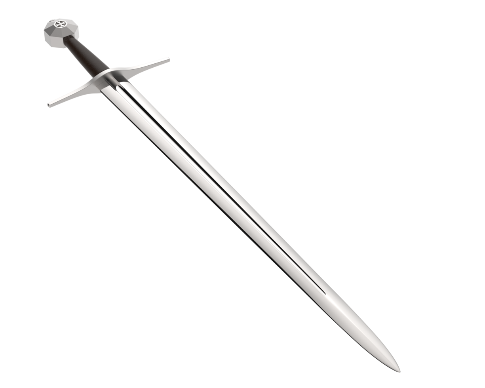
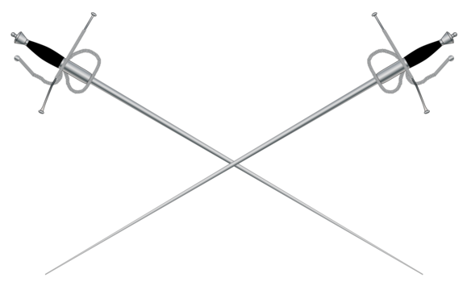
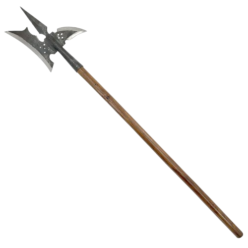
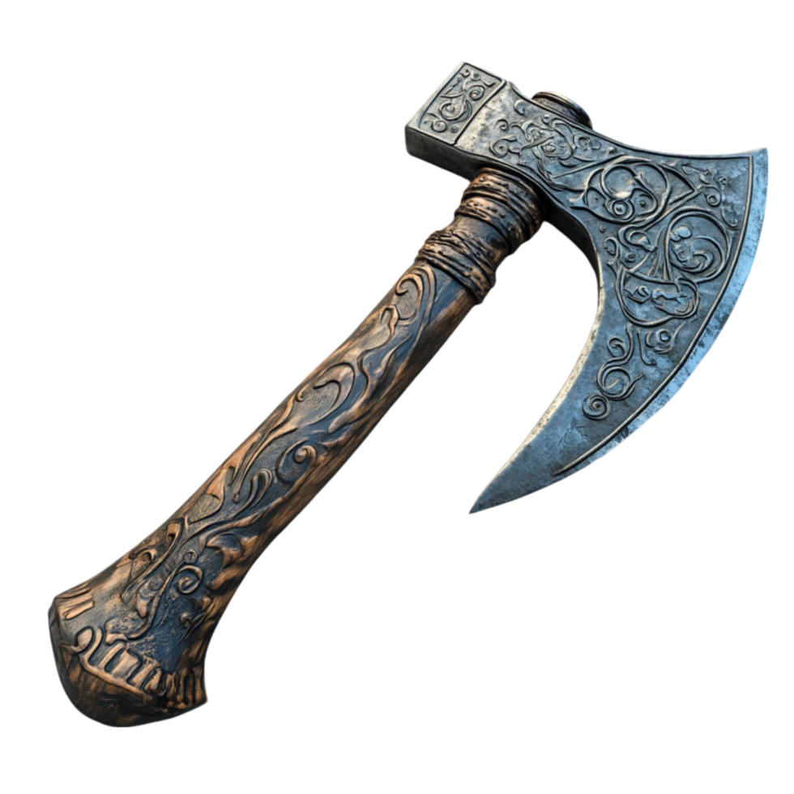
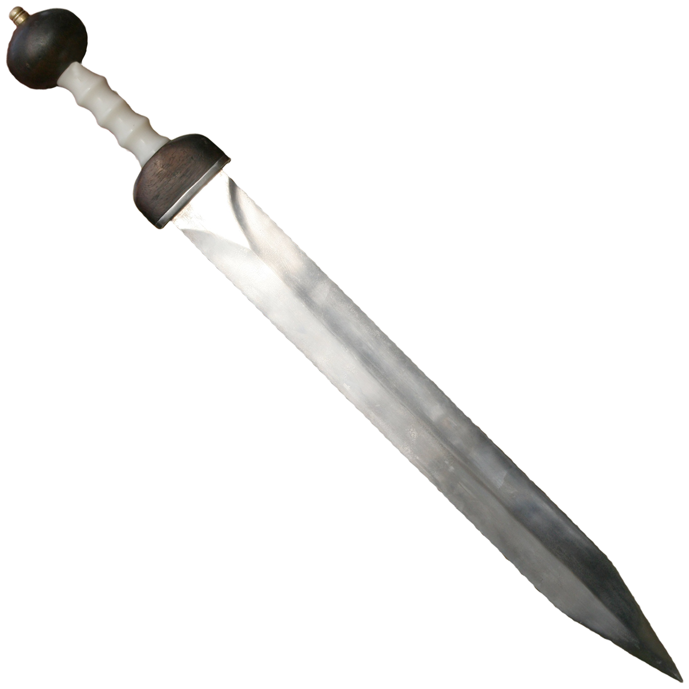
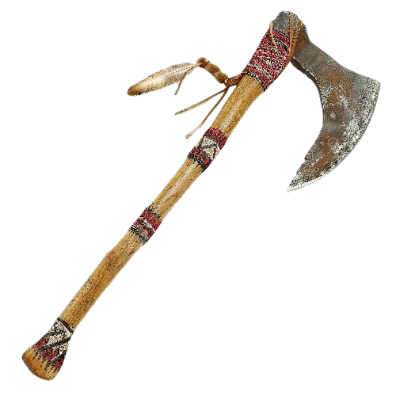
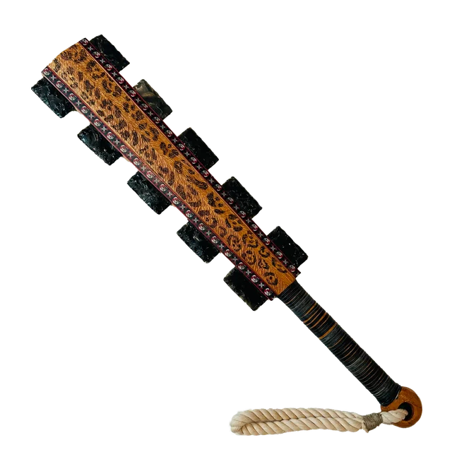
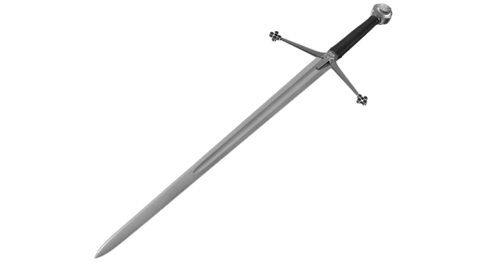
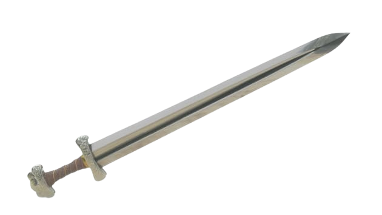

A tradição guerreira da Europa, Américas e mundo Nórdico através dos séculos.
As principais armas de combate corpo a corpo das civilizações ocidentais.

Espada longa de dois fios usada com uma ou duas mãos. Versátil em combate, permitia corte e estocada com alcance superior às espadas curtas medievais.

A rapieira ou roupeira é um tipo de espada, de lâmina comprida e estreita, popular desde o período medieval até a renascença, que se tornou a arma mais comum daquela época, principalmente na Espanha, Itália e Portugal nos séculos XVI e XVII. A lâmina tem largura suficiente para cortar a golpe, mas muito do poder da rapieira vem da sua habilidade de perfuração.

A alabarda é uma arma antiga composta por uma longa haste. A haste é rematada por uma peça pontiaguda, de ferroAlabardaor sua vez é atravessada por uma lâmina em forma de meia-lua (similar à de um machado), com um gancho ou esporão no outro lado. Sua difusão provocou a associação de diferentes formas, o que pode confundi-la com outras armas de cabo longo como a Naginata japonesa ou a Guan Dao chinesa.

O Machado dinamarquês é um tipo primitivo de machado de batalha, usado principalmente durante a tr"Machadore a Era Viquingue na Europa e início da Idade Média. Outros nomes para a arma incluem Machado Inglês e Machado de Alça. Sua superfície de corte varia, mas geralmente possui entre 20 e 30 centímetros. As lâminas Tipo L tendem a ser menores, com a ponta da broca varrida a frente para uma capacidade de corte superior.

A gládio é uma espada curta utilizada na Antiguidade, que os autores latinos chamavam ense (em latim: ensis). É o mais antigo tipo de espada curta de lâmina reta de dois gumes conhecida. Caracteriza-se pela sua lâmina, tradicionalmente, bastante larga e quase da mesma largura do punho à ponta. Na Idade do bronze eram inigualáveis e na Idade do ferro mantiveram a primazia, em relação a outros tipos de armas alternativas.

O tomahawk (ou "machadinha") é um tipo de machado de pequena dimensão, para uso com apenas uma das mãos, usado sobretudo pelos ameríndios algonquinos da América do Norte, tanto como ferramenta, quanto como arma. Tradicionalmente, possui o formato de "machadinha" com um cabo reto O termo entrou na língua inglesa no século XVII como uma adaptação da palavra "Powhatan" (dos algonquinos da Virgínia).

Macuahuitl ou maquahuitl (mācuahuitl em Nahuatl,), também conhecida como “espada de madeira”, era uma arma usada pelos astecas e outros povos que habitavam no que atualmente é o México central. Era uma espécie de clava achatada de onde sobressaíam várias lâminas de obsidiana, um tipo de vidro vulcânico muito utilizado para a fabricação de instrumentos cortantes pelos povos pré-colombianos

Claymore é uma variante escocesa da espada medieval montante utilizada durante os séculos XV e XVI.[1] Possui gume duplo e é manejada com as duas mãos, impedindo o guerreiro de utilizar um escudo. A palavra claymore vem do gaélico escocês claidheamh mòr e significa espadão. A claymore é um tipo de espada montante, porém mais leve.

A espada da Era Viking (também conhecida como espada viking) ou espada carolíngia é o tipo de espada predominante na Europa Ocidental e do Norte durante a Alta Idade Média. A espada da Era Viking ou da era carolíngia desenvolveu-se no século VIII a partir da espada merovíngia, mais especificamente, a produção franca de espadas nos séculos VI e VII e, por sua vez, durante os séculos XI e XII, deu origem à espada de cavaleiro do período românico.[5]
A longsword medieval é um dos exemplos mais sofisticados de engenharia de combate da Europa. Ao contrário do que se imagina, seu uso exigia treinamento extenso — os tratados de esgrima medievais, conhecidos como Fechtbücher, descrevem dezenas de técnicas complexas.
Sua versatilidade era única: podia ser empunhada com uma ou duas mãos, usada em half-swording (segurando a lâmina para perfurar armaduras) e adaptada a diferentes distâncias de combate, tornando-a a arma mais completa da Europa medieval.